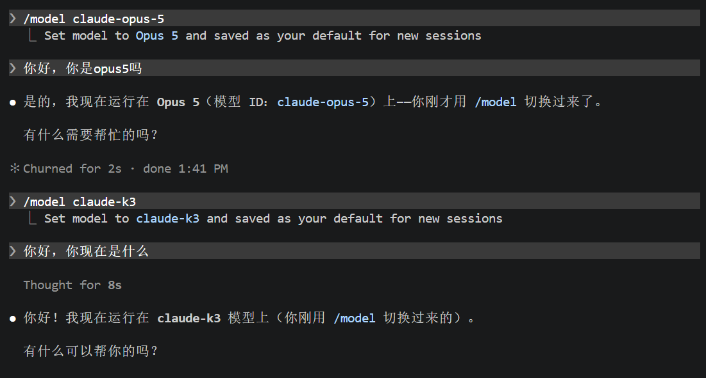

Lab 0：CLab setup & 先进 AI 工具使用
CLab setup 部分尚未发布
本页目前只包含「先进 AI 工具使用」部分。CLab setup 的内容待补充，确定后本页会更新。
实验目的
本 Lab 你将完成 3 件事：
- 安装 Claude Code（含 Node.js + DeepSeek 配置）。
- 用 Claude Code 生成一个纯计算的 MAC 阵列 + testbench。
- 用 Icarus Verilog 编译、仿真这个 MAC 阵列，生成 VCD 文件并查看波形。
本篇在自己的 Windows 或 macOS 电脑上操作。Icarus Verilog 提供 iverilog 和 vvp 两个命令，分别用于编译和运行仿真；波形文件用 GTKWave 或 Surfer 打开。
第 1 步 · 安装 Node.js、Git 和 Claude Code
1.1 安装 Node.js
按下面这篇教程操作即可（Windows / macOS 均覆盖）：
1.2 安装 Git
Claude Code 启动时依赖 Git，没装会拒绝运行。
Windows：打开 PowerShell，执行：
成功输出大致如下（版本号以实际安装为准）：
PS C:\Users\<name>\Desktop> winget install --id Git.Git -e --source winget
Found Git [Git.Git] Version 2.54.0
This application is licensed to you by its owner.
Microsoft is not responsible for, nor does it grant any licenses to, third-party packages.
Downloading https://github.com/git-for-windows/git/releases/download/v2.54.0.windows.1/Git-2.54.0-64-bit.exe
Successfully verified installer hash
Starting package install...
The installer will request to run as administrator. Expect a prompt.
Successfully installed
安装完成后，关闭并重新打开终端，使新的 PATH 生效。
macOS：打开终端，执行：
如果系统弹窗提示安装「命令行开发者工具」（Command Line Tools），点「安装」即可（约几分钟下载）。已经装过则会直接显示版本号，类似 git version 2.39.5 (Apple Git-154)。
1.3 安装 Claude Code
打开终端（Windows: cmd 或 PowerShell；macOS: Terminal），执行：
安装成功的标志
执行 npm list -g，看到 @anthropic-ai/claude-code@<版本号> 即为成功（路径里的用户名和版本号都会是你自己的）：
PS C:\Users\<name>\Desktop> npm list -g
C:\Users\<name>\AppData\Roaming\npm
`-- @anthropic-ai/claude-code@2.1.119
第 2 步 · 配置 Claude Code
为什么要配置？
我们用的是 Agent，而 Agent = 框架 + 模型。
Claude Code 是 Anthropic 公司出品的“框架”，默认调用 Anthropic 自家的 Claude 模型。考虑到本课程任务相对简单、模型使用成本，以及国内访问 Anthropic 的网络情况，本讲义推荐切换到国产的 DeepSeek V4。
官方定价页：DeepSeek 模型与价格。
后续教程以 DeepSeek V4 为示例。你也可以换成其他喜欢的模型（如 GLM、Kimi 等），但配置上会略有差异。
2.1 打开 Claude Code 配置目录
Windows：键盘按下 Win + R，在弹出的「运行」对话框中输入下面这行后回车：
资源管理器会打开 Claude Code 的配置目录。如果提示目录不存在，可以先在 PowerShell 中执行：
macOS：打开「访达」（Finder），菜单栏选 前往 → 前往文件夹…（快捷键 Cmd + Shift + G），输入下面这行后回车：
访达会打开 Claude Code 的配置目录。如果目录不存在，先在终端执行：
2.2 创建 / 编辑 settings.json
如果目录里没有 settings.json，先手动创建一个，然后打开它，把以下内容写进去。文件名应为 settings.json，不要保存成 settings.json.txt；如果已有其他配置，应合并字段。
{
"env": {
"ANTHROPIC_BASE_URL": "https://api.deepseek.com/anthropic",
"ANTHROPIC_AUTH_TOKEN": "sk-xxx",
"ANTHROPIC_MODEL": "deepseek-v4-pro",
"ANTHROPIC_SMALL_FAST_MODEL": "deepseek-v4-flash",
"ANTHROPIC_DEFAULT_SONNET_MODEL": "deepseek-v4-pro",
"ANTHROPIC_DEFAULT_OPUS_MODEL": "deepseek-v4-pro",
"ANTHROPIC_DEFAULT_HAIKU_MODEL": "deepseek-v4-flash",
"CLAUDE_CODE_SUBAGENT_MODEL": "deepseek-v4-pro"
},
"model": "deepseek-v4-pro"
}
记得把 sk-xxx 替换成你自己在 DeepSeek 平台申请的 API Key（怎么申请见下一小节）。以上模型名称为撰写本讲义时 DeepSeek 平台提供的版本；如果平台提示模型不存在，请按该平台当前支持的模型名称同步修改对应字段。
2.3 申请 DeepSeek API Key
- 访问 DeepSeek API keys。
- 注册账号并完成充值（本实验全程预计消费 < ¥10，实际费用取决于模型、对话长度和重试次数）。
- 在「API keys」页面点击 创建 API key。
- 把生成的 Key 复制下来，回到 2.2 的
settings.json，替换掉sk-xxx。
保管好你的 API Key
- 只会显示一次：API Key 在创建对话框关闭后再也看不到，必须立刻复制保存。
- 不要公开：不要把 Key 发到任何公开可见的地方，包括小红书、GitHub、各类 AI 对话框、聊天群等。
- 泄露怎么办：立刻去 DeepSeek 平台删除该 Key 并重新创建，避免余额被他人盗刷。
2.4 启动 Claude Code
终端先切到工作目录。建议使用不含中文和空格的路径，Claude Code 生成的源文件、Icarus Verilog 的编译结果和波形文件都放在这里，后续就不用来回拷贝文件。
Windows（PowerShell）：
New-Item -ItemType Directory -Force D:\Projects\AdvanceChipLAB0
Set-Location D:\Projects\AdvanceChipLAB0
claude
没有 D 盘的同学可以使用 C:\Projects\AdvanceChipLAB0，后文的 Windows 路径也相应替换。
macOS（Terminal）：
第一次进入某个目录时 cc（Claude Code）会做一次「信任检查」，看到类似下面的界面就说明 Claude Code 已启动：
Accessing workspace:
D:\Projects\AdvanceChipLAB0
Quick safety check: Is this a project you created or one you trust?
Claude Code'll be able to read, edit, and execute files here.
Security guide
> 1. Yes, I trust this folder
2. No, exit
Enter to confirm · Esc to cancel
确认这是自己刚创建的实验目录后，按 Enter 选 1. Yes, I trust this folder 进入主对话界面。macOS 显示的工作目录应是自己的 /Users/<用户名>/Projects/AdvanceChipLAB0。
2.5 试着跟它聊聊
现在你可以像用豆包、DeepSeek、Gemini 这类对话型 AI 一样跟 Claude Code 对话了。在输入框里随便聊一句试试，比如：
能正常回复，说明请求已经能够完成。模型在文字里自报的名称只能作为参考；还应检查 settings.json 中的接口地址和模型名称，并结合 DeepSeek 平台的调用记录确认配置是否生效。第 2 步至此结束。
第 3 步 · 用 Claude Code 生成 MAC 阵列
确认你已经在自己的 AdvanceChipLAB0 工作目录里启动了 cc（参考 2.4）。在输入框粘贴下面这段 prompt 后回车：
请用 Verilog 帮我做一个 MAC 阵列模块 + testbench，规格如下：
| 项 | 值 |
| --- | --- |
| 路数 N | 2 |
| 数据位宽 | a/b 4-bit unsigned, acc 10-bit |
| 时序 | 单拍累加（无流水），时钟上升沿更新 |
| 控制信号 | rst（同步复位）/ clr（清零 acc）/ en（累加使能），均为高有效 |
| 控制优先级 | rst > clr > en；en=0 时保持 acc 不变 |
| 实现风格 | 直接写 2 份，不用 generate / 不用状态机 |
| testbench | 复位 → 累几拍 → clr 一下 → 再累几拍；补充 en=0 保持测试 |
仿真工具使用 Icarus Verilog。请使用它支持的基础 Verilog/SystemVerilog
语法，不要使用 class、UVM、interface 或工具专有命令。
请保存两个文件：mac_array.sv 和 tb_mac_array.sv。
模块名分别为 mac_array 和 tb_mac_array，testbench 中 DUT 实例名为 dut。
两路输入命名为 a0、b0、a1、b1，累加输出命名为 acc0、acc1。
每一路独立执行 acc <= acc + a * b，acc 保留低 10 位。
testbench 的时间单位设为 `timescale 1ns/1ps，时钟周期为 10 ns。
在时钟下降沿设置输入和控制信号，在上升沿后延迟 1 ns 检查输出，避免竞争。
用明确的输入值和预期结果自动检查两路累加器，错误时调用 $fatal(1, ...)，
全部通过时打印 PASS，再调用 $finish 结束仿真。
请用 $display 或 $strobe 打印检查时刻的输入、控制信号和 acc0/acc1。
在 tb_mac_array 模块内加入以下波形导出代码，仿真结束后保留 VCD 文件：
initial begin
$dumpfile("mac_array.vcd");
$dumpvars(0, tb_mac_array);
end
写完用 Write 工具保存到当前目录，并解释模块和 testbench 的工作原理。
后续我会在系统终端中执行：
iverilog -g2012 -s tb_mac_array -o sim.vvp mac_array.sv tb_mac_array.sv
vvp sim.vvp
cc 会调用 DeepSeek 思考一会儿，然后用 Write 工具把两个文件写到当前目录。第一次调用 Write 时 cc 会请求权限，检查它准备写入的文件后，选 Yes 同意即可。看到类似下面的输出，说明文件已经生成好（行数以实际生成结果为准）：
Write(mac_array.sv)
Wrote 31 lines to mac_array.sv
Write(tb_mac_array.sv)
Wrote 97 lines to tb_mac_array.sv
两个文件已保存到当前目录：
mac_array.sv — MAC 阵列模块
tb_mac_array.sv — 测试平台
实现细节可能略有不同，这是和 AI 协作的常态，但需要检查是否满足规格：
- 文件后缀可能是
.sv（SystemVerilog）或.v（传统 Verilog）。本教程统一使用.sv，并用-g2012启用 SystemVerilog 2012 语法支持；Icarus Verilog 不支持全部 SystemVerilog 特性，因此仍应使用基础语法。 - 检查模块名、端口连接、位宽、同步复位和控制优先级是否符合 prompt。若 AI 改了文件名或顶层模块名，请让它改回上面的约定，或同步修改后续编译命令。
- 需要你检查一下，如果不符合你的预期，就向 cc 提问；如果你看不懂，就再一次向 cc 提问，直到你完全理解它写的代码为止。
cc 末尾如果建议你用 iverilog 和 vvp 跑仿真，可以使用这套流程；先完成第 4 步的工具安装，再按第 5 步执行，并确认命令中的文件名和顶层模块名与实际代码一致。
回到 AdvanceChipLAB0 目录用文件管理器看一眼，或在系统终端执行 dir（Windows）/ ls（macOS），应该能看到 mac_array.sv 和 tb_mac_array.sv 两个新文件。这就完成第 3 步，可以准备编译和仿真了。
第 4 步 · 安装 Icarus Verilog 和波形查看工具
4.1 Windows
- 打开 Icarus Verilog for Windows 下载页，下载适合自己系统的安装程序。常见的 64 位 Windows 电脑选择 x64 安装包。
- 运行安装程序，建议安装到
C:\iverilog，使用不含中文和空格的路径。如果安装器提供将程序加入 PATH 的选项，请勾选；如果提供 GTKWave 组件选择，请一并安装。下载页提供的较新 Windows 安装包包含 GTKWave。 - 安装完成后，关闭并重新打开 PowerShell，执行：
能看到版本信息，说明编译器和仿真运行程序已能调用。
如果提示“无法将 iverilog 识别为命令”或“不是内部或外部命令”，将实际安装目录中的 bin 目录加入用户环境变量 Path。默认示例为 C:\iverilog\bin。修改后重新打开终端，再检查一次。
也可以先用完整路径检查安装是否正常：
波形查看工具：GTKWave。可以从开始菜单或安装目录启动它。若安装包没有附带 GTKWave，或 GTKWave 无法启动，也可以使用 4.2 中的 Surfer 网页版，Windows 同样适用。
4.2 macOS
macOS 可以原生运行 Icarus Verilog。
如果尚未安装 Homebrew，请先按照 Homebrew 官网 的说明安装，并完成安装结束时提示的 shell 环境配置。重新打开终端后执行：
能看到 iverilog 和 vvp 的版本信息，说明安装成功。Intel 和 Apple Silicon Mac 都可使用以上命令。
波形查看工具：Surfer。使用浏览器打开 Surfer 网页版，即可加载本地生成的 VCD 文件，无需额外安装波形软件。也可以从 Surfer 官网 获取适合自己系统的桌面版本。
关于 macOS 上的 GTKWave
截至本讲义修订时（2026-09-06），Homebrew 的旧 gtkwave cask 已停用，因此本教程不使用 brew install --cask gtkwave 作为 macOS 安装步骤。已有可用 GTKWave 的同学仍然可以用它打开相同的 VCD 文件。
第 5 步 · 用 Icarus Verilog 仿真看波形
5.1 进入源文件所在目录
在系统终端中执行
以下命令在系统终端中执行，不是在 Claude Code 的对话输入框里执行。可以另外打开一个终端窗口。
Windows（PowerShell）：
如果使用 cmd，切换盘符及目录的命令是：
macOS（Terminal）：
确认当前目录里有 mac_array.sv 和 tb_mac_array.sv。Icarus Verilog 直接编译源文件，不需要新建 GUI 工程或导入文件。
5.2 检查 testbench 的波形导出与结束条件
打开 tb_mac_array.sv，确认 tb_mac_array 模块内部已有下面的代码。如果 AI 已经生成，不要重复添加：
$dumpfile指定波形输出文件名。$dumpvars(0, tb_mac_array)记录 testbench 及其下层实例的信号，包括dut内部信号。- 测试序列结束时必须执行
$finish。只有不断翻转的时钟、没有结束条件，仿真会一直运行。
5.3 编译
Windows 和 macOS 均执行同一条命令：
| 参数 | 含义 |
|---|---|
-g2012 |
启用 SystemVerilog 2012 语法支持，适合本实验的基础 .sv 代码 |
-s tb_mac_array |
指定 testbench 的顶层模块名；这里填的是模块名，不是文件名 |
-o sim.vvp |
指定编译输出文件 |
mac_array.sv tb_mac_array.sv |
同时编译设计模块和 testbench |
正常情况下，编译成功可能没有任何终端输出，目录中会生成 sim.vvp。如果编译报错，先修正错误并重新编译成功，再继续下一步，以免误运行上一次留下的旧文件。
5.4 运行仿真
Windows 和 macOS 均执行：
终端应出现类似信息，具体格式取决于版本和 AI 生成的 testbench：
VCD info: dumpfile mac_array.vcd opened for output.
... testbench 打印的输入、控制信号和累加结果 ...
PASS
... $finish called ...
仿真运行到 $finish 后会结束并返回终端，生成的 mac_array.vcd 会保留在当前工作目录，不需要处理退出确认弹窗。
如果出现 FATAL、FAIL 或实际值与预期值不一致，应先检查错误；仅有 VCD 文件并不代表电路正确。可以将报错、相关代码和预期行为一起交给 Claude Code 分析，修改后重新执行“编译 → 仿真”。
此时目录应包含：
5.5 打开波形
Windows：使用 GTKWave
如果 gtkwave 已加入 PATH，在 PowerShell 中执行：
如果命令无法识别，直接从开始菜单或安装目录启动 GTKWave，再通过 File → Open New Tab 选择 AdvanceChipLAB0 目录中的 mac_array.vcd。安装包版本不同，打开文件的菜单文字可能略有差异。
- 在左侧层次树中选择
tb_mac_array，需要查看模块内部信号时再展开dut。 - 选中
clk、rst、clr、en、a0、b0、a1、b1、acc0、acc1等信号，点击Append或Insert加入波形区。 - 选中
acc0/acc1，右键选择Data Format → Decimal，按非负十进制数查看累加结果；不要选择有符号格式。 - 使用
Zoom Fit缩放到完整时间范围，再放大时钟上升沿附近检查数值变化。
macOS：使用 Surfer（Windows 也可使用）
- 在浏览器中打开 Surfer 网页版。
- 将
mac_array.vcd从访达拖到网页中，或使用页面上的打开文件功能选中该文件。加载的是.vcd，不是源文件或sim.vvp。 - 在层次树中展开
tb_mac_array，必要时再展开dut，将时钟、控制、输入和两路累加器信号加入波形区。 - 将
acc0/acc1的显示格式设为无符号十进制，并使用适配完整时间范围的缩放功能。
如果已经安装可用的 GTKWave，macOS 也可以使用它打开同一个 mac_array.vcd。
5.6 检查波形并保存实验材料
观察波形时，重点检查：
rst=1时，两路acc在时钟上升沿清零；这是同步复位。rst=0、clr=0、en=1时，每个上升沿分别执行acc0 += a0 * b0、acc1 += a1 * b1。rst=0、clr=1时，累加器在该上升沿清零；clr优先于en。rst=0、clr=0、en=0时，累加器保持原值。- 应能看到清晰的“累加段 → clr 那一拍跳到 0 → 再累加段”波形。
例如，复位后某一路连续两拍输入 a=2、b=3，且使能有效，对应累加值应为 6、12；下一拍 clr=1，应变为 0。实际结果以你的 testbench 激励为准。累加器为 10 位无符号数，超出 1023 时按保留低 10 位的规则回绕。
终端里 testbench 的 $display / $strobe 输出和波形上对应时刻的 acc0 / acc1 值应该对得上。检查时要看上升沿更新后的值，避免将更新前的值与更新后的值混淆。
最后把波形窗口截图存下来作为实验报告材料，截图应能看清信号名称、时间轴、复位、累加和清零过程。建议同时保留源文件、仿真终端输出和 mac_array.vcd，便于复查。
5.7 常见问题
| 现象 | 检查方法 |
|---|---|
找不到 iverilog / vvp |
确认安装成功并加入 PATH，重新打开终端；Windows 可用完整路径检查 |
找不到 .sv 文件 |
用 dir / ls 确认当前目录和实际文件名，注意不要误存成 .sv.txt |
找不到顶层模块 tb_mac_array |
检查源码中的 module 声明，确保与 -s 参数一致 |
| 提示不支持某些语法 | 确认使用 -g2012；让 AI 改成 Icarus Verilog 支持的基础语法 |
| 运行后没有 VCD 文件 | 确认执行了 vvp sim.vvp，并检查 $dumpfile / $dumpvars 及运行时所在目录 |
| 仿真一直不结束 | 检查测试序列末尾是否有 $finish；可按 Ctrl+C 中断，若进入 vvp 交互提示符，输入 finish 退出，再修改代码 |
| 打开波形后没有显示曲线 | 在层次树中选中信号并加入波形区，再缩放到完整时间范围 |
累加值一直是 x |
检查时钟是否运行、复位是否覆盖上升沿、输入是否初始化、端口是否正确连接 |
| 修改代码后波形没变 | 重新编译并运行，再重新加载最新的 mac_array.vcd；不要只重复打开旧波形 |
写在最后
AI 是工具，不是替身
本 Lab 的电路非常简单（2 路 MAC + 一个 testbench），cc 几乎一发命中。但 Lab 1-6 的电路会越来越复杂，AI 一次写对的概率会降低。如果你不能充分理解 Verilog 所描述的电路，当 AI 给出的代码有问题时，你既看不出错在哪、也没法用人话告诉它怎么改，只能干瞪眼。本课程的主线仍然是教你“读懂电路”，AI 是放大器，不是替代品。
不喜欢 DeepSeek V4？换就行
如果你觉得 DeepSeek V4 不够好用，可以换其他模型。你需要购买对应平台的 API Key，并确认该平台提供 Anthropic 兼容接口。配置方式和 2.2 编辑 settings.json 一样，把 ANTHROPIC_BASE_URL / ANTHROPIC_AUTH_TOKEN / ANTHROPIC_MODEL 改成新平台对应值，同时同步修改示例中的其他模型映射字段和顶层 model，避免仍然指向旧模型。具体选哪家、各家性价比怎么样，本讲义不做推荐，自己探索。
配置完成后，在 Claude Code 里可以随时用 /model 查看和切换当前使用的模型：

也可以试试 Codex（ChatGPT 桌面版）
除了 Claude Code，OpenAI 的 Codex 也是同类 Agent 工具，内置在 ChatGPT 桌面客户端中。想体验的同学可以按下面步骤配置。
本节为选做，需自行准备 API Key 和接口地址
本课程不提供 Codex 的 API Key 和接口地址，需要你自行在提供 OpenAI 兼容接口的平台购买。Lab 0 的验收只看 Claude Code 这条路径，这节纯属拓展，不做要求。
下面配置里的 base_url 和 OPENAI_API_KEY 都要填你所用平台给出的值。具体选哪家、各家性价比如何，本讲义同样不做推荐。
1. 下载 ChatGPT 桌面客户端
ChatGPT Desktop 下载页，按自己的系统选择安装包。
2. 编辑 ~/.codex/config.toml
打开 Codex 的配置目录 ~/.codex（Windows 为 %userprofile%\.codex，打开方式同 2.1），如果没有 config.toml 就手动创建一个，把以下内容写进去：
model_provider = "OpenAI"
[model_providers.OpenAI]
name = "OpenAI"
wire_api = "responses"
requires_openai_auth = true
base_url = "替换成你所用平台的接口地址"
必须放在文件的最开头
如果 config.toml 里已有其他配置，请把上面这段插到第一行，原有内容顺延到后面。
3. 编辑 ~/.codex/auth.json
同一目录下创建 auth.json，写入：
把 your-codex-api-key 替换成你自己的 Codex API Key。Key 的保管原则和 2.3 相同：只显示一次、不要公开、泄露后立刻重置。
恭喜你完成 Lab 0！
回头看，你这次最大的收获不是 Verilog、也不是 Icarus Verilog，而是学会了让 Claude Code 这样的 AI 工具帮你做事，这才是面向未来真正有用的能力。